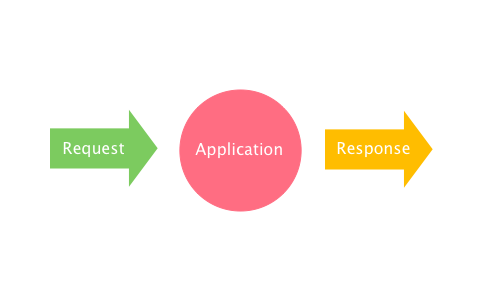

In this chapter, I'd like to introduce a new term: middleware, which is the most important concept to understand why Clack is so powerful and extensible without losing simplicity.
What's middleware?
So far, what Clack applications do is just to take a request and return a response.
Let's add middlewares to this figure.

The middlewares are surrounding the application. They take requests before the application takes them and receive the responses the application generates. By wrapping the application, the middlewares enable you to change the application's behaviour without modifying the application's code.
This mechanism has the potential to improve web application development.
Clack.Middleware
Writing a Clack middleware is not so difficult once you understand Clack component.
;; importing symbols for readability.
(import '(clack:<middleware>
clack:call
clack:call-next))
(defclass <sample-mw> (<middleware>) ())
(defmethod call ((this <sample-mw>) env)
;; preprocessing
(let ((response (call-next this env)))
;; postprocessing
))
A Clack middleware is a subclass of <middleware>, which has a similar structure as <component>. For example, middlewares also implement call methods.
Have you noticed a call-next function in the above example? call-next calls "the next" component, middleware, or application. Take a look at the second figure in this page again. Middlewares wrap components such as other middlewares and applications. By calling call-next, middlewares can call another component in the "multi-shell" structure.
The beauty of middleware is that it can be reused among web applications. In the next chapter, I'll show you a real example of a middleware.